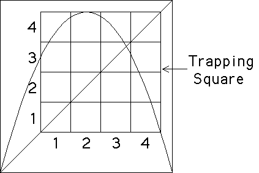
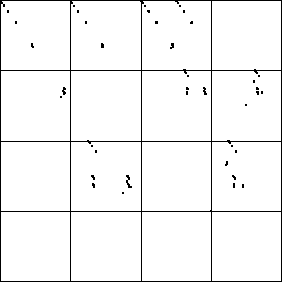

| For another example, consider the s = 3.732
logistic map. We must be a bit careful with the bins in this case. |
|  |
| Note the trapping square.
Graphical iteration
shows that points iterate into this square and subsequently never leave. That
is, the eventual dynamics are constrained to lie in the trapping square. So
we divide the trapping square into bins. What combinations are forbidden?
We cannot go |
| from bin1 into bin1 or bin2 |
| from bin2 into bin1, bin2, or bin3 |
| from bin3 into bin1 or bin2 |
| from bin4 into bin4 |
|
| To find the forbidden combinations, we look above each bin on the
bottom of the trapping square and note which bins on the side of the
trapping square contain no part of the graph of the function. |
| Here is the IFS driven by the s = 3.732 Logistic Map. |
|  |